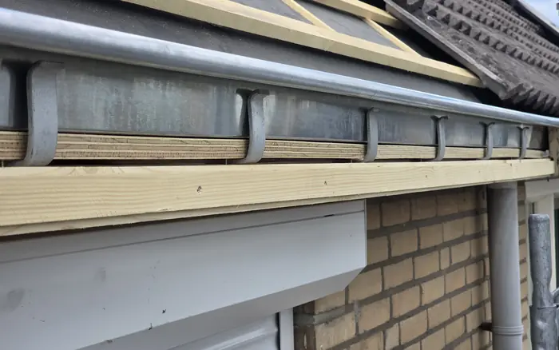
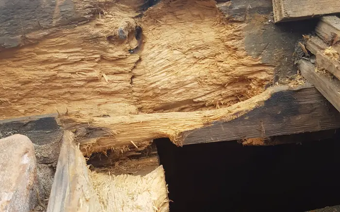
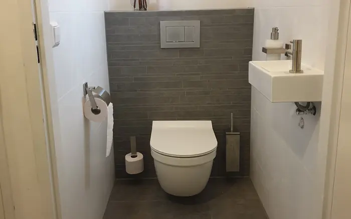
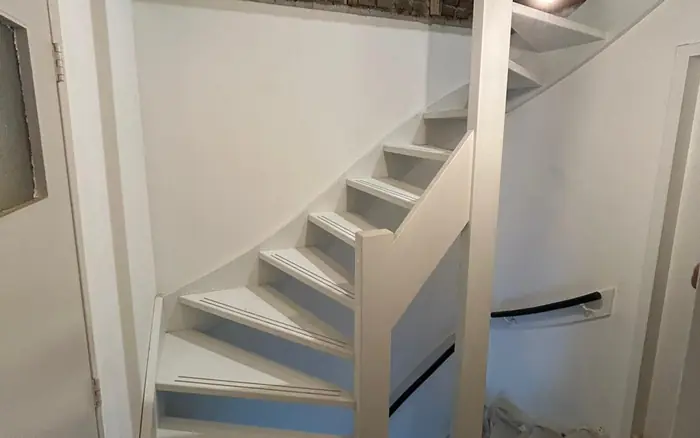
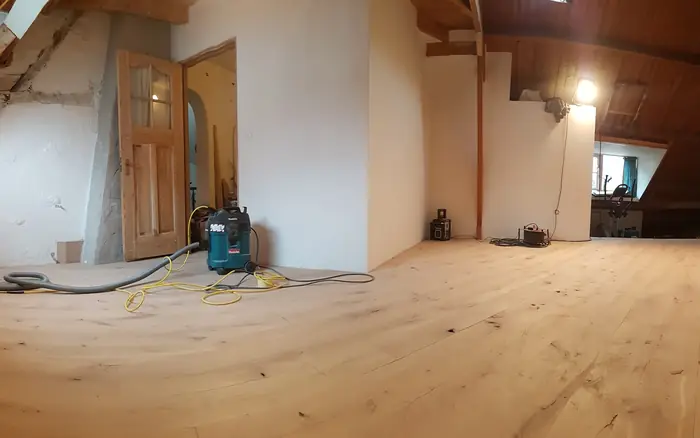
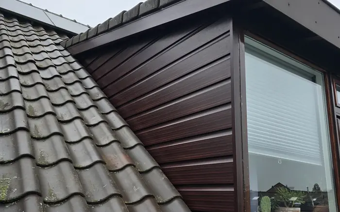
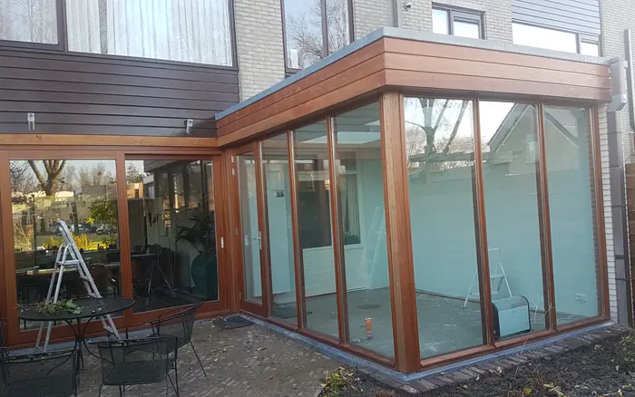
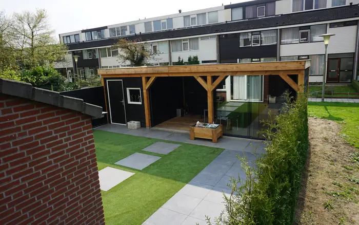

Dak en dakpannen
Verschoven of kapotte pannen, een nok die los zit of een dak dat helemaal opnieuw gedekt moet worden.
- Dakpannen herstellen of vernieuwen
- Nokvorst en panlatten
- Dakwerk aan de schoorsteen
Home / Diensten
Vernieuwing, verbetering of verandering, in vier groepen.
Vier soorten werk, zoals Meck Bouw ze zelf indeelt. "Voor zowel grote als kleine klussen zijn wij er graag voor u!"
"Repareren of onderhouden is beter dan vervangen."
Verschoven of kapotte pannen, een nok die los zit of een dak dat helemaal opnieuw gedekt moet worden.

Een lekkende goot of verouderde leidingen: Martin vervangt of repareert ze.

Houtrot, achterstallig schilderwerk of een verzakte bestrating: eerst kijken wat te repareren is.
"Graag kijk ik met een bouwkundig oog mee naar de mogelijkheden, oplossingen en de realisatie daarvan."

Een nieuwe badkamer, of een deel daarvan. Martin kijkt met u mee naar de mogelijkheden.

Een toilet verbeteren of helemaal vernieuwen, met advies vooraf.

De indeling wijzigen of uitbreiden, een keuken plaatsen of een trap en kasten op maat.
Zuiniger wonen: isolatie en beter glas.

Van enkel naar dubbel of driedubbel glas, ramen vervangen en screens.

Isoleren van dak, wanden en vloer, en een zolder opbouwen tot een echte kamer.
Meer ruimte en meer plezier van uw huis en tuin.

Een dakkapel voor meer ruimte op zolder, of een bestaande opknappen met nieuwe bedekking.

Een uitbouw of aanbouw, van de bouwkundige kant tot de afwerking.

Schutting, schuur, overkapping, poort of bestrating.
Metsel- en stucwerk doet Meck Bouw alleen in het klein.
Groot of klein: vertel wat er moet gebeuren, Martin denkt vooraf mee.